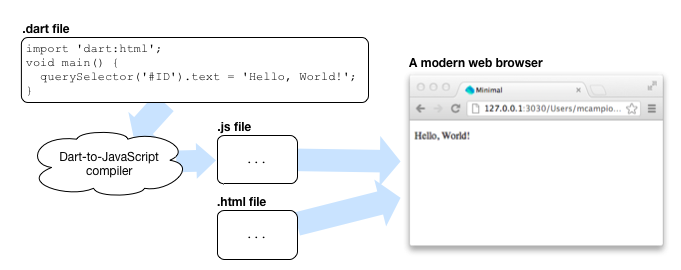
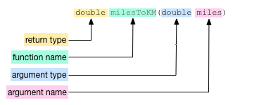

开始
下载 Dart并运行两个示例程序。
该教材告诉你如何开始用 Dart 编写 web 应用。 下面可以下载 Dart 软件， 然后用 Dart 编辑器来创建并 运行两个小程序。
- 下载 Dart 软件包
- 下载的软件包中都有什么？
- 启动 Dart 编辑器
- 关于 Dart 应用
- 创建一个命令行应用
- 运行命令行应用
- 创建一个 web 应用
- 运行 web 应用
- 关于 HTML、CSS、 和 Dart
- 关于 main() 和其他顶级函数
- 关于文件命名规范
- 其他资源
- 下一步干啥？
下载 Dart 软件包
下载 Dart。 下载的软件包含了该教材使用的 Dart Editor。
Dart 工具支持当前的 OS 系统 , , or .
下载的软件包中都有什么？
解压下载的软件。 解压后的根目录为 Dart 安装目录， 包含如下工具：


启动 Dart 编辑器
在 Dart 安装目录中双击 Dart 编辑器的图标
 就可以启动编辑器了。
就可以启动编辑器了。
Dart 编辑器在Editor pane tab 页中 显示一个欢迎界面。 下图高亮标注了编辑器的一些 主要功能。

Send feedback button(发送反馈按钮) ： 可以让你直接向 Dart 编辑器团队和 和 整个 Dart 团队提 Bug 和新功能。
Search field(搜索输入框) ：搜索 Files view 中的每个文件。 在 Search view 中显示结果。 在搜索结果视图中， 双击一个文件可以在 Editor pane 打开文件。 在 Editor pane 中所有符合搜索结果的字符串都被高亮显示了。
Run button(运行按钮) ： 运行当前在 Files view 中选中 的应用或文件。
New application button(创建应用按钮) ：创建一个新项目， 一个目录和常用的文件。 另外，你也可以用 File > New Application 菜单或者 在欢迎界面的 Create an application 按钮来创建应用。
Files view(文件视图) ：显示 Dart 应用的结构化视图和 相关的文件。 在 Files view 中双击文件可以在 Editor pane 中打开。 如果在 Files view 中单击一个文件， 则会选中该文件， 但是不会在 Editor pane 中打开。 要打开文件你必需双击文件。
Editor pane(编辑面板) ：提供了常用的编辑功能， 和 Dart 代码完成功能、 API 浏览功能、并且支持代码重构。 第一次使用编辑器的时候，会在编辑面板中显示 一个欢迎界面， 在欢迎界面可以迅速的访问一些 Dart 资源和 示例项目。 通过 Tools 菜单可以打开欢迎界面。
Problems pane(问题面板) ：显示警告和错误信息。
关于 Dart 应用
一个 Dart 应用至少包含如下文件：
- 一个 Dart 代码文件— 一个以 .dart 结尾的文件，里面包含 Dart 代码
- 一个顶级 main() 函数。 这是应用程序的入口。
有两种 Dart 应用： 命令行应用和 web 应用。 命令行程序是一个独立的可以在 Dart VM 运行的 程序。 web 应用嵌入一个网页中并在 浏览器中运行（直接在支持 Dart 的浏览器中运行或者 编译为 JavaScript 运行）。
命令行应用
Dart 命令行应用独立运行 在命令行虚拟机中，和 网页浏览器无关。 命令行应用通常用来 提供服务器端支持， 当然也可以是脚本文件。
Dart VM 无需中间编译而直接运行 Dart 代码。

你可以在 Dart 编辑器中点击 Run 按钮
 来直接运行命令行应用。
也可以用
位于
来直接运行命令行应用。
也可以用
位于 dart-sdk/bin
目录的 Dart VM 工具
来运行。
Web 应用
Dart web 应用在浏览器中运行。 除了 Dart 文件外， web 应用还需要 HTML 文件来嵌入 Dart 代码。 通常， web 应用为服务器端提供了客户端 的用户界面。
你可以在 Dart 编辑器中点击 Run 按钮
 来运行 Dart web程序。
默认 Dart 编辑器将会用 Dartium
来运行你的程序。
Dartium 包含了一个 Dart VM可以直接
运行 Dart 代码。
来运行 Dart web程序。
默认 Dart 编辑器将会用 Dartium
来运行你的程序。
Dartium 包含了一个 Dart VM可以直接
运行 Dart 代码。

如果你想在不支持 Dart VM 的浏览器中
查看你的 web 应用，你可以
用 Dart-to-JavaScript 工具
把 Dart 代码编译为 Javascript 代码，
该编译器在 dart-sdk/bin 目录中。
然后在你的浏览器中运行 JavaScript 代码。
Dart 编辑器提供了
一种便利方式用
JavaScript 来运行 web 应用。

该教材剩下部分将 分别创建和运行一个命令行应用 和一个 web 应用。
创建命令行应用
在 Dart 编辑器中选择 File->New Application 菜单，
或者点击 New Application 按钮
 。
然后会出现一个对话框，如下所示：
。
然后会出现一个对话框，如下所示：
-
在 Application Name 中输入
helloworld。 通常应用的名字都是小写字母。 该名字为应用的根目录 和主程序文件的名字。 -
选择你要保存项目的目录。 默认情况下，Dart 编辑器在用户目录下 创建一个名字为
dart的目录。 -
选中 Generate sample content 选项。 Dart 编辑器将生成所选应用 类型的一些基础文件。 对于一个命令行应用， 将生成一个标准的 ‘Hello World’ 代码。
-
从列表中选择 Command-line application 。
-
点击 Finish 按钮。
Dart 编辑器为该项目创建了一个目录和一些 命令行应用的基础代码。 Files view 显示了该应用的 文件结构。
在 helloworld 应用中包含如下 目录和文件：
helloworld ：包含了一个简单命令行应用的基础目录 和代码文件。
pubspec.yaml
：声明你应用
需要的库。
packages 目录包含这里声明的库。
pubspec.lock 指定了这些库
的版本号。
bin
： 包含该应用的源代码。
该示例的主要代码文件为 helloworld.dart 。
helloworld.dart ： 包含该应用的 Dart 代码。
Editor pane 界面
显示了 helloworld.dart 文件的内容。
该程序用 dart:core 库提供的
print() 函数
在标准输出窗口
中打印 ‘Hello, World!’。
core 库定义的函数和对象自动
导入到所有 Dart 项目中。
运行命令行应用
如何在 Dart 编辑器中运行：
- 在 Files view 中选中 helloworld.dart 文件。
- 点击 Run 按钮
 。
。
Dart 编辑器打开一个名字为 Output view 的窗口 来显示 helloworld 应用的输出内容。
创建一个 Web 应用
现在来创建个 Web 应用。
和创建命令行应用一样，
点击 New Application 按钮
 。
应用名称设置为
。
应用名称设置为 clickme。
这次由于要创建 Web 应用，
所以选择 Web application
选项：

Dart 编辑器自动创建 Web 应用需要的基础代码和目录。
如前所述，Dart 编辑器创建一个项目名称的目录， 和一个包含 main() 函数的 Dart 代码文件。 同时， 编辑器还创建了一个用来引用 Dart 代码的 HTML 文件。
clickme 应用的 main() 函数 中包含了 具有如下功能的Dart 代码： 把文本显示在网页上，并 注册一个 event handler — 一个 函数用来响应用户触发的事件，例如 点击鼠标。 该代码用了 dart:html 库中的 API。
在下一个教程中， 你会从头开始创建一个小型应用， 从创建 Dart 代码到 HTML 代码和 CSS 代码。 然后可以再来看看 clickme 应用中的代码。
运行 Web 应用
如何在 Dart 编辑器中运行 clickme 应用：
- 选中
clickme.html。 - 点击 Run 按钮
。
Dart 编辑器用 clickme 应用中 HTML 文件的地址来在 Dartium 中运行。 Dartium 加载 clickme 应用的 HTML 文件和 嵌入的 Dart 应用， 结果如下所示：
作为 JavaScript 运行
把 Dart 应用编译为 JavaScript 可以在
其他浏览器中运行。
Dart 编辑器提供了一个编辑的选项来实现该功能。
右键点击 clickme.html 文件，
选择 Run as JavaScript 选项即可。

Dart 编辑器把该应用编译为 JavaScript 并且 调用你系统默认的浏览器来 运行该应用。
关于 HTML、 CSS 和 Dart
通常 HTML 文件、 Dart 文件和 CSS 文件一起实现一个 Dart web 应用。 每个文件都用不同的语言来编写， 并且每个文件的职责都不同：
| 语言 | 目的 |
|---|---|
| HTML | 描述文档的内容(文档和结构中的页面元素) |
| CSS | 控制页面元素的显示方式 |
| Dart | 实现程序的交互和动态行为 |
HTML 是一种描述网页的语言。 HTML 用标签来设置初始界面框架， 把元素放到页面中， 同时把用户负责交互的脚本引入到页面中。 HTML 设置好初始的文档树结构和设置 元素的类型、class、和ID， 这样 HTML、CSS 和 Dart 代码可以引用同一个元素。
CSS是 Cascading Style Sheets 的缩写，定义了文档中 元素的显示样子。 CSS 控制了很多格式化的内容： 字体、文字大小、颜色、背景颜色、 边框、边距、以及对其方式等。
Dart 代码作为脚本文件嵌入到 HTML 文件中。 一个 Dart 程序可以响应事件， 例如 鼠标点击；也可以动态 的改变网页元素和保存 信息。
关于 main() 和顶级函数
Dart 允许你定义 top-level(顶级) 函数， 顶级函数不属于任何类和对象。 每个应用都最少有一个名字为 main() 的顶级函数。
该示例中的应用都有其他的顶级函数。 Hello World 示例中的 print()函数 是定义在 dart:core 中的顶级函数。 clickme应用定义了一个名字为 reverseText() 的顶级函数。
一个函数由两部分： signature(签名) 和 body(代码主题)。

签名包含函数的名字、 返回值的类型、 和接收的参数个数和类型。

代码主题是定义了函数行为的代码。 通常位于花括号 ({code}) 之间。 如果代码主题是一个单一表达式，则 可以省略花括号用 => 缩写形式：
double milesToKM(double miles) => miles/0.62;
milesToKM() 函数执行一个简单的数学运算并且 返回结果。
该函数接收一个参数。 如果函数有多少参数， 则由逗号分隔。
关于命名规范
当在 Dart 编辑器中创建应用的时候， 要求你提供应用的名字。 通常，应用的名字和相关 的目录和文件都是小写字母。
如你所见， Dart 编辑器把应用的名字用于如下地方：
- 应用的目录
- Dart 主文件的文件名 (包含 main() 函数的文件)
- 主 HTML 文件的文件名
- 主 CSS 文件的文件名
当你不用 Dart 编辑器创建项目的时候， 你也应该遵守这些约定。
其他资源
- 来自于 Dart: Up and Running一书的 Dart 编辑器 详细介绍了如何使用 Dart 编辑器。 内容包含如何设置运行环境、如何用代码 自动完成功能、如何调试 程序、如何重构、 等等。
- The 开发者指南 介绍了帮助你创建、测试和部署 Dart 代码的文档、文章和 其他资源。
接下来干啥？
-
下载所有 Dart 教程的示例代码， 下载示例代码压缩包，然后解压并在 Dart 编辑器中打开
dart-tutorials-samples。 -
进入下一个教程 连接 Dart 和 HTML， 该教程将手把手教你如何从头开始创建一个小型 web 应用。